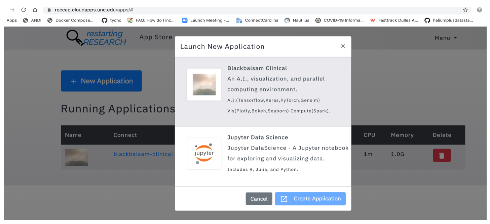
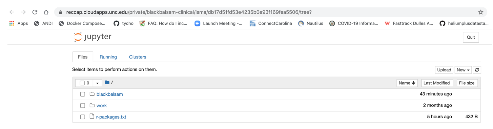
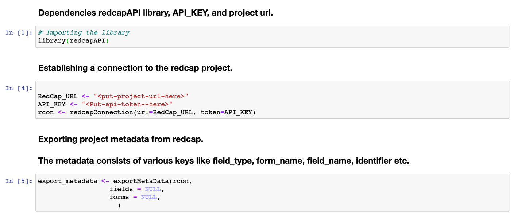
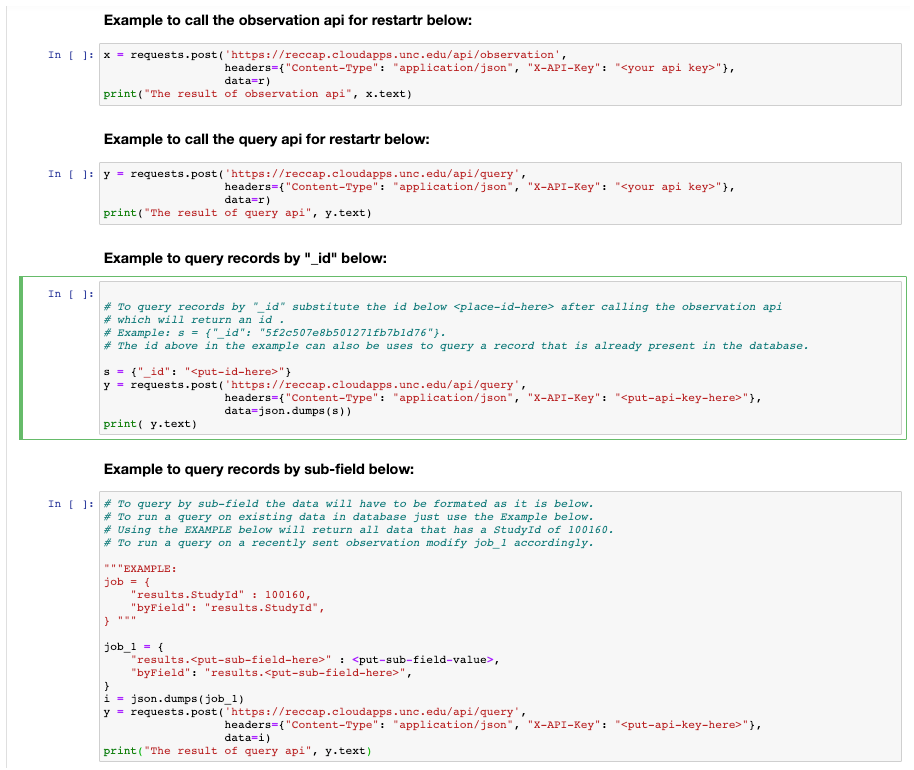
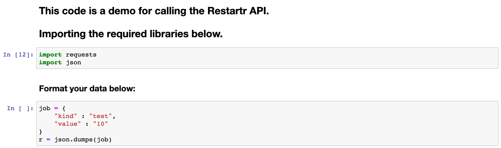
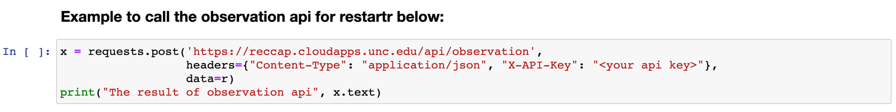

Blackbalsam¶
Begin by starting the App as described in the section Creating an Application. Select the CloudTop Viewer application.
Exporting REDCap Data into R¶
Step-1: Get a REDCap account for a project URL and API key
if you don’t have an account contact Adam Lee to get one. If you have an existing account use the credentials associated with it
Step-2: Go to https://reccap.cloudapps.unc.edu/accounts/login
Step-3: Click “New Application” and choose Blackbalsam Clinical
Step-4: Click on “black balsam” folder and then click on RedCapAPIRDemo.ipynb
- Step-5: In the notebook, on cell 2 substitute REDCap URL and API key with
your credentials
Step-6: Run first three cells in the notebook
- Step-7: To export records, use show_forms, show_fields, or
show_all_records cells
Using the restartr notebook to get data into mongodb¶
Step-1: Go to https://reccap.cloudapps.unc.edu/accounts/login and login.
- Step-2: Click on “New Application”, choose Blackbalsam Clinical then
click “Create Application”.
- Step-3: Click on the “blackbalsam” directory and then launch the
RestartrApiDemo.ipynb notebook.
Step-4: In cells 3 to 6 substitute your api-key here “”.
Step-5: Run the first two cells in the notebook.
Step-6: Run the third cell to persist data into mongodb.
The first cell imports the required dependencies.
The second cell is where data can be formatted to insert into mongodb.
- Step-7: To query the data use, query by “_id”, query by sub-field, or just
use query methods provided in the RestartrApiDemo.ipynb notebook.